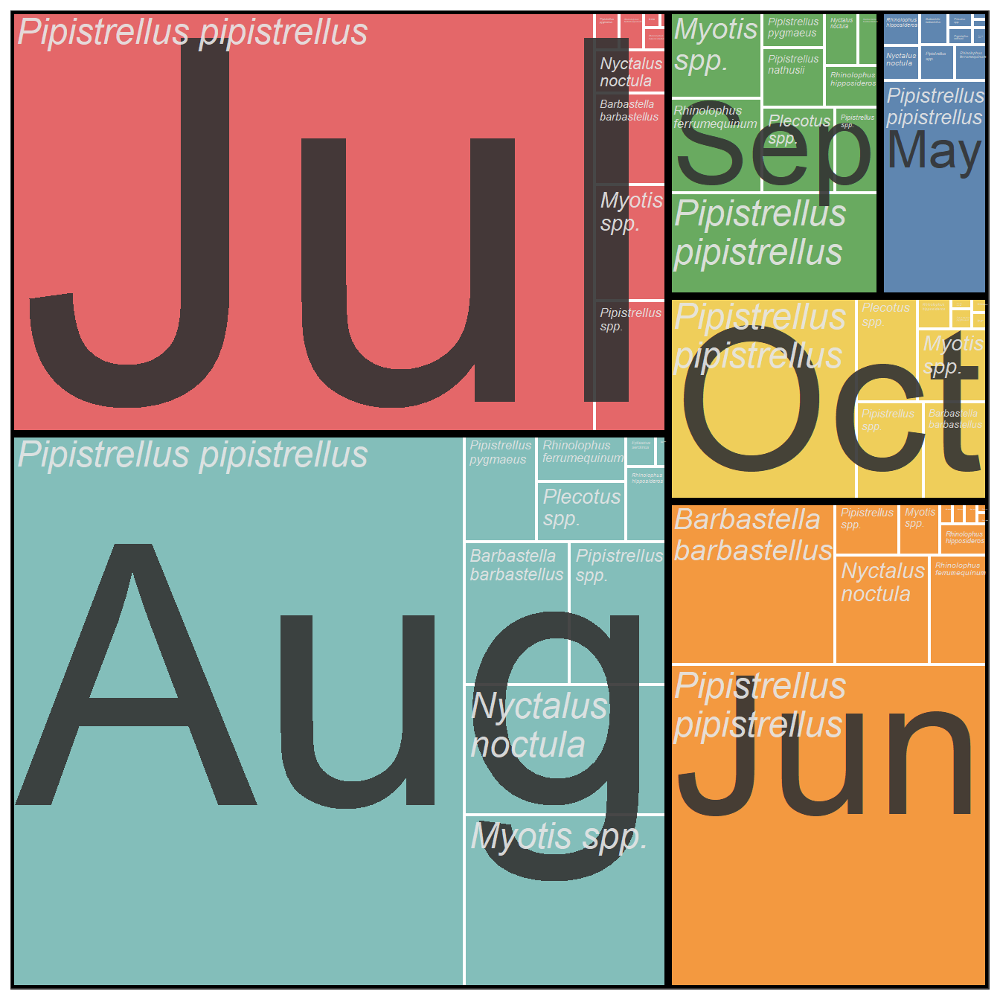

These web pages are under active construction (so many things won’t look right)
These web pages compliment the data science chapters of the forthcoming BCT Bat Survey Guidelines 4th Edition, and hopefully encourage ecologists to make the most of their bat survey data. They also demonstrate literate programming with Quarto®1 which can vastly improve workflow (welcome to the world beyond Excel).
To help ecologists get started, the code making all the graphs and analysis is freely available to copy and use; just click on the Show the code text, copy to the clipboard 2and paste into the R environment and run (to get going in R see Install R… section below).
A Show the code is given below, the code produces Figure 1. The code copied to the clipboard is designed to run as a standalone chunk; with all the R libraries, data and code.
Show the code
### Libraries Usedlibrary(tidyverse) # Data Science packages - see https://www.tidyverse.org/library(treemapify) # extension to ggplot for plotting treemaps -# see https://cran.r-project.org/web/packages/treemapify/vignettes/introduction-to-treemapify.htmllibrary(ggthemes) # for colour pallet "Tableau 10"# Install devtools if not installed# devtools is used to install the iBats package from GitHubif (!require(devtools)) {install.packages("devtools")}# If iBats not installed load from Githubif (!require(iBats)) { devtools::install_github("Nattereri/iBats")}library(iBats)#### Add data and time information to the iBats statics bat survey data set using the iBats::date_time_infostatics_plus <- iBats::date_time_info(statics)graph_data <- statics_plus %>%group_by(Species, Month) %>%tally()ggplot(graph_data, aes(area = n, fill = Month, label = Species, subgroup = Month)) +scale_fill_tableau(palette ="Tableau 10") +#geom_treemap(colour ="white", size =2, alpha =0.9) +geom_treemap_subgroup_border(colour ="black", size =5, alpha =0.9) +geom_treemap_subgroup_text(place ="centre", grow = T, alpha =0.9, colour ="grey20", min.size =0) +geom_treemap_text(colour ="grey90", place ="topleft", fontface ="italic", reflow = T, min.size =0, alpha =0.9) +theme_bw() +theme(legend.position ="none") # No legend

Figure 1: Example Graph: Monthly Bat Activity from the statics data set in the iBats Package
Install R, RStudio and Packages
Download and install the latest version of R https://cran.r-project.org/bin/windows/base/. Download the version for your operating system; R can be downloaded for Windows, Mac & Linux.
It is recommended R is used through the RStudio IDE. Download and install the latest version of RStudio from their web page https://www.rstudio.com/products/rstudio/#Desktop. Download the free desktop version.
Install the iBats Package from GitHub
The iBats package contains example data and functions that help with the Data Science of bat survey results. To install this package use the code below in the console (see Figure ); one line at a time. The package is installed from GitHub.
These web pages were built on the shoulders of others:
The visualisation and analysis has been undertaken in R (R Core Team 2022) using R version 4.2.1 (2022-06-23 ucrt); R is an open-source statistical programming language.
This document has been produced dynamically using knitr(Xie 2022) and QUARTO, integrating the data, analysis and reporting. The analysis has undertaken a tidyverse approach (Wickham et al. 2019).
Tables have been produced with knitr(Xie 2022) with kableExtra(Zhu 2021), gt(Xie 2022) and the flextable(Gohel 2022) packages. The broman(Broman 2022) package provided some useful R functions.
Pruim, Randall, Daniel T. Kaplan, and Nicholas J. Horton. 2021. Mosaic: Project MOSAIC Statistics and Mathematics Teaching Utilities. https://CRAN.R-project.org/package=mosaic.
R Core Team. 2022. R: A Language and Environment for Statistical Computing. Vienna, Austria: R Foundation for Statistical Computing. https://www.R-project.org/.
Thieurmel, Benoit, and Achraf Elmarhraoui. 2019. Suncalc: Compute Sun Position, Sunlight Phases, Moon Position and Lunar Phase. https://github.com/datastorm-open/suncalc.
Wickham, Hadley. 2022. Stringr: Simple, Consistent Wrappers for Common String Operations.
Wickham, Hadley, Mara Averick, Jennifer Bryan, Winston Chang, Lucy D’Agostino McGowan, Romain François, Garrett Grolemund, et al. 2019. “Welcome to the tidyverse.”Journal of Open Source Software 4 (43): 1686. https://doi.org/10.21105/joss.01686.
Wickham, Hadley, Winston Chang, Lionel Henry, Thomas Lin Pedersen, Kohske Takahashi, Claus Wilke, Kara Woo, Hiroaki Yutani, and Dewey Dunnington. 2022. Ggplot2: Create Elegant Data Visualisations Using the Grammar of Graphics. https://CRAN.R-project.org/package=ggplot2.